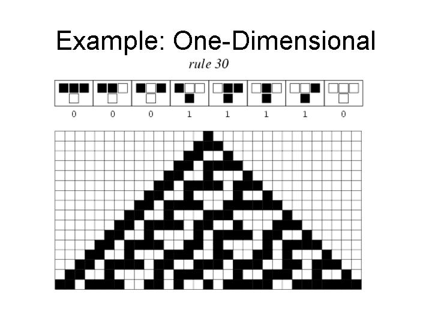

cellautomataThis extension generates music from a cellular automaton.
load "cellautomata/cell_aut.lsp" ;; you must load the file to use this extension
play cell-aut-demo() ;; play a demo
cell-aut(sound-object-list, duration, update-rule, iter) - main function, where
sound-object-list is a list of expressions, one for each cell, and
the expression is evaluated when the cell is "1"
duration is the duration of each generation of the cellular automata
update-rule is an integer describing how the next generation is computed; see
the source code for details
iter is the number of iterations (generations) to compute
This extension harnesses the power of cellular automata for algorithmic composition. Cellular automata have been applied to graphics and visual patterns as well as music. In this work, the automaton consists of an array of boxes, where each box is initialized to either black or white (on/off, 0/1). At every step the next row/generation (represented visually as below the previous array) is computed from the first array using an update rule on each array element. An update rule (that defines the automaton itself) is simply a function from the array element's parent, and the parent's left and right neighbors. This concept is illustrated here:
A1 A2 A3 ... B1 B2 B3 ...
Let B2 be the element whose value is being computed. B2 is therefore dependent on the values of A1, A2, and A3 only. An example of an update rule would be:
if A1 = A3 and A2 = 1 then B2 = 1, else B2 = 0
There are 2 possible values for each of A1, A2, and A3 which means there are 2^3 = 8 possible configurations. And there are 2^8 = 256 possible functions from A1, A2, and A3 to B2. Therefore there are only 256 possible update rules. Note that the number of possible update rules is not dependent on the number of elements in the array. The rules can be numbered from 0 to 255. To determine the rule number, write the next-generation value for each configuration (the state of three neighbors) in the previous generation as shown near the top of the figure below. Then read off these outcomes to form a bit string: 00011110. Then convert this to a number: 00011110 = 30 base 10.
In the figure below, rule 30 is used to generate a series of rows, starting with a single "one" in the first row.

Instead of B1 = 1 indicating that a box be colored black and B1 = 0 indicated that a box be colored white, in the music model this will correspond to turning certain sound objects on and off. For example, here we have an array of oscillators.
Osc 60 Osc 65 Osc 67 Osc 70 Osc 75 Osc 76 Osc 79
If only the 1st and 3rd elements are "turned on" this would result in the chord (sum (Osc 60) (Osc 67)). So each array, or level of the automata would correspond to a chord, and the chord progression would change over time as the automata developed.
This feature very versatile, so the user can specify the basic sound array, the duration of each step, and which combining function to bring the activated sounds together. This design allows the user to use any expression to create sounds.
The main function, cell-aut, takes the following
parameters:
Some interesting rules to try are Wolram's two most famous rules: 30 (chaotic) and 90 (fractal patterns).
Here is an outline of the algorithm implemented in cell-aut.lsp.
The file lib/cellautomata/cell_aut.lsp
includes the function cell-aut-demo which is
equivalent to the following:
function cell-aut-demo() exec require-from(piano-note-2, "pianosyn.lsp") return cell-aut(cell-aut-major-scale(), 0.2, 30, 80) * 0.5
so you can run this to hear an example output:
play cell-aut-demo()
Source code is in lib/cellautomata/cell_aut.lsp.